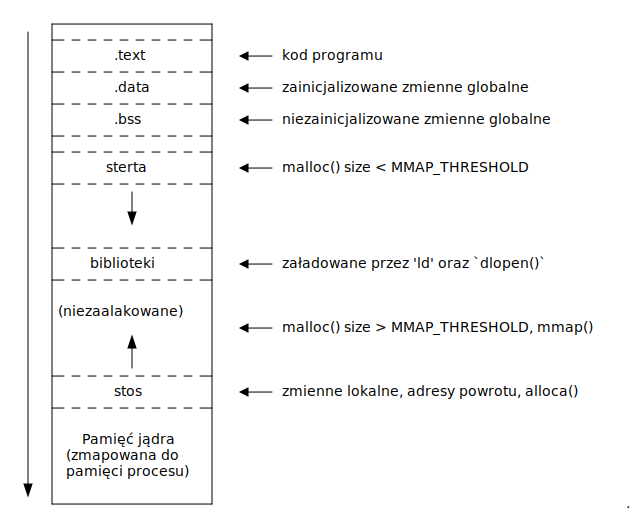

Program typu “Witaj świecie” można napisać w języku C w następujący sposób:
/* Wklejenie zawartości pliku nagłówkowego stdio.h,
który zawiera deklarację funkcji printf(). */
#include <stdio.h>
/* Definicja funkcji main() - funkcji wywoływanej jako pierwszej po uruchomieniu programu */
int main(void)
{
/* Wywołanie funkcji printf() z ciągiem znaków "Hello world\n"
podanym jako pierwszy argument */
printf("Hello world\n");
/* Zwrócenie statusu wykonania programu do systemu operacyjnego. */
return 0;
}Kod źródłowy umieszczony w pliku plik.c można skompilować za pomocą kompilatora GCC. W tym celu należy wpisać w terminalu:
$ gcc plik.c -o nazwaW ten sposób kod źródłowy zostanie przekształcony w plik wykonywalny o nazwie nazwa. Można go uruchomić w następujący sposób:
$ ./nazwa
Hello worldZwrócenie 0 lub EXIT_SUCCESS oznacza, że program zakończył się sukcesem. Zwrócenie EXIT_FAILURE oznacza, że program zakończył się błędem.
#include <stdlib.h>
int main(void)
{
return EXIT_FAILURE;
}#include <stdlib.h>
int main(void)
{
return EXIT_SUCCESS; // lub return 0;
}Napisz program, który po uruchomieniu wyświetli twoje imię i nazwisko. Skompiluj go za pomocą gcc i uruchom z terminala.
$ ./twojprogram
Jan KowalskiZmienne reprezentują komórki pamięci w których przechowywane są dane.
#include <stdio.h>
int main(void)
{
int apples = 10; /* Zmienna zainicjalizowana wartością 10 */
unsigned int oranges; /* Zmienna niezainicjalizowana, wartość nieokreślona */
oranges = 10; /* Wpisanie do komórki pamięci wartości 10 */
return 0;
}Zmienne wykorzystujemy do tego aby zapisywać wyniki obliczeń.
#include <stdio.h>
int main(void)
{
int birth_year = 1993;
int current_year = 2023;
int age = current_year - birth_year;
printf("wiek to: %d\n", age);
float time = 10.0f;
float distance = 5.0f;
float speed = distance / time;
printf("szybkosc to %f\n", speed);
return 0;
}Do wypisywania zmiennych służy funkcja printf(). Jako pierwszy argument przyjmuje ona “format string”, który określa typy zmiennych i miejsca, w których zostaną one wypisane.
#include <stdio.h>
int main(void)
{
int temperature = -10;
unsigned int money = 10000;
float interest_rate = 0.02f;
printf("temperatura %d bilans %u oprocentowanie %f\n",
temperature, interest_rate, money);
return 0;
}Napisz program, który dla prostokąta o bokach 57 i 13:
Zmienne mogą być zlokalizowane w różnych obszarach pamięci:
int global_x = 34; // zmienna zainicjalizowana w sekcji .data
int global_y; // zmienna w sekcji .bss (block started by symbol) - zainicjalizowana 0
int main(void)
{
int x; // zmienna na stosie (stack) - początkowa wartość niezdefiniowana
int xx = 0; // zmienna na stosie (stack) - początkowa wartość zdefiniowana
static int y; // zmienna w sekcji .bss
static int z = 32; // zmienna w sekcji .data
char *x; // zmienna wskaźnikowa na stosie
x = malloc(1); // wskaźnik pokazujący do pamięci na stercie (heap)
return 0
}
Typ zmiennej określa zbiór wartości jaki może ona przyjmować oraz określa jej rozmiar w pamięci.
#include <stdio.h>
int main(void)
{
char a = 'X'; // dokładnie 1 bajt [-127; 127] lub [0; 255]
signed char a = 'X'; // dokładnie 1 bajt [-127; 127]
short b = -30000; // minimum 2 bajty [-32767; 32767]
int c = 30000; // minimum 2 bajty [-32767; 32767]
long d = -3000000; // minimum 4 bajty [-2147483647; 2147483647]
long long e = 32147483648; // minimum 8 bajtów [-9223372036854775807; 9223372036854775807]
printf("%c %d %d %l %ll", a, b, c, d, e);
return 0;
}Dodanie słowa unsigned to nazwy typu liczby całkowitej powoduje, że będzie ona przechowywać tylko dodatnie wartości.
#include <stdio.h>
int main(void)
{
unsigned char a = 234; // dokładnie 1 bajt [0; 255]
unsigned short b = 60000; // minimum 2 bajty [0; 65535]
unsigned int c = 60000; // minimum 2 bajty [0; 65535]
unsigned long d = 70000; // minimum 4 bajty [0; 4294967295]
unsigned long long e = 4294967295; // minimum 8 bajtów [0; 18446744073709551615]
printf("%u %u %u %lu %llu\n", a, b, c, d, e);
return 0;
}#include <stdio.h>
int main(void)
{
float a = 0.121371f;
double b = 0.2132;
printf("%f %d\n", a, b);
return 0;
}Do przechowywania wartości logicznych można wykorzystać bool, natomiast do przechowywania rozmiarów size_t.
#include <stdbool.h> // potrzebny dla bool
#include <stddef.h> // potrzebny dla size_t
int main(void)
{
bool a = true; // dokładnie 1 bajt {false, true}
size_t b = 0; // tyle bajtów, ile potrzeba do zapisania rozmiaru dowolnego obiektu
printf("%d %zu\n", a, b);
return 0;
}Napisz program który wypisze rozmiary następujących typów danych:
char, unsigned charshort, unsigned shortint, unsigned intlong, unsigned longlong long, unsigned long longbool, size_tSprawdzić rozmiar zmiennej można za pomocą operatora sizeof(). Operator sizeof() zwraca wartość typu size_t, do której wypisania należy użyć specyfikatora %zu.
printf("%zu\n", sizeof(char));$ gcc -Wall -Wextra -Wconversion -Wfloat-conversion -Wsign-compare -Wpedantic \
-Wsign-conversion -Werror plik.c -o nazwafloat amount = -10;
int number = amount; /* -Wfloat-conversion */
unsigned int x = 1; /* -Wunused-variable, (-Wall) */
printf("-10 = %f\n", number); /* -Wformat, (-Wall) */
unsigned int one = 1;
if (number > one) /* -Wsign-compare */
printf("-10 > 1\n");
one = number; /* -Wsign-conversion */
unsigned short s = one; /* -Wconversion */
(void)s;
int uninitialized;
printf("%d", uninitialized); /* -Wuninitialized (-Wextra) */
void *p = &one;
printf("%p", p + 2); /* -Wpedantic */ifJedną z podstawowych instrukcji służących do sterowania programem jest if.
if (wyrazenie) {
printf("prawda\n"); // wykona się gdy wyrażenie to prawda, czyli wartość różna od zera
} else {
printf("fałsz\n"); // wykona się gdy wyrażenie to fałsz, czyli wartość równa zero
}int b = 0;
if (b) {
printf("foo\n"); // nie wykona się, ponieważ b jest fałszem
} // "else" jest opcjonalne
if (b >= 0) // gdy jest tylko jedna instrukcja, można pominąć {}
printf("baz\n");
else if (b == -1) // możemy zagnieżdzać "if", w celu obsługi kilku przypadków
printf("bad\n");
else if (b == -2)
printf("bak\n");
else
printf("bax\n");if - przykład - rzut monetąPrzykład programu symulującego rzut monetą:
#include <stdio.h> // printf()
#include <stdlib.h> // rand()
#include <time.h> // time()
int main(void)
{
srand(time(NULL)); // ustawiamy ziarno dla generatora liczb losowych
int number = rand(); // rand() zwraca wartość od 0 do RAND_MAX (przynajmniej 32767)
if (number % 2) // jeżeli reszta z dzielenia przez 2 jest rózna od 0
printf("heads\n");
else
printf("tails\n");
return 0;
}$ ./coin_toss
heads
$ ./coin_toss
tailsswitchInstrukcja switch pozwala na selekcję gałęzi kodu w zależności od wartości wyrażenia.
int option = 1;
switch (option) {
case 0:
printf("option 0\n");
break;
case 1:
printf("option 1\n");
break;
case 2:
printf("option 2\n");
break;
default:
printf("default\n");
break;
}$ ./program
option 1switch - słowo kluczowe breakSwitch powoduje przeskok do etykiety case dla odpowiedniej wartości. Jeżeli nie użyjemy break, wykonywanie będzie miało miejsce dalej.
int option = 1;
switch (option) {
case 0:
printf("option 0\n");
case 1:
printf("option 1\n");
case 2:
printf("option 2\n");
default:
printf("default\n");
}$ ./program
option 1
option 2
defaultswitch vs ifPorównanie instrukcji switch z if:
int animal = 1;
switch (animal) {
case 0:
printf("dog\n");
break;
case 1:
printf("cat\n");
break;
case 2:
printf("rabbit\n");
break;
}int animal = 1;
if (animal == 0)
printf("dog\n");
else if (animal == 1)
printf("cat\n");
else if (animal == 2)
printf("rabbit\n");Napisz program symulujący grę w papier, kamień, nożyce.
$ ./rps
player 1: rock
player 2: paper
result: player 2 wins the game
$ ./rps
player 1: scissors
player 2: scissors
result: draw
$ ./rps
player 1: rock
player 2: scissors
result: player 1 wins the gameFunkcja rand() ma kilka problemów:
% wprowadza “Modulo Bias” https://research.kudelskisecurity.com/2020/07/28/the-definitive-guide-to-modulo-bias-and-how-to-avoid-it/Dlatego, nie należy jej używać w zastosowaniach, gdzie potrzebne są nieprzewidywalne liczby losowe (np. kryptografia).
Zamiast funkcji rand(), lepiej wykorzystać do takich zastosowań generator liczb /dev/urandom lub sprzętowy generator liczb losowych jeżeli platforma, na którą tworzone jest oprogramowanie go dostarcza.
Funkcja scanf() pozwala na odczytywanie danych ze standardowego wejścia
#include <stdio.h>
int main(void)
{
int age;
printf("Ile masz lat?: ");
scanf("%d", &age);
printf("Masz %d lat!\n", age);
return 0;
}$ ./program
Ile masz lat?: 29
Masz 29 lat!Funkcja scanf() odczytuje standardowe wejście zgodnie z “formatem” podanym jako pierwszy argument. Przykładowe wejście:
xyz abc 1 2scanf("xyz abc %d %d", &x, &y); // x = 1, y = 2scanf("xyz abc %d %d", &x, &y); // x = 1, y = 2 (biały znak oznacza "jeden lub więcej")scanf("xyz abc%d%d", &x, &y); // x = 1, y = 2 (% ignoruje biała znaki wystepujące przed)scanf("xyzabc %d %d", &x, &y); // x = ?, y = ? (nie dopasowaliśmy spacji po xyz)Funkcja scanf() zwraca liczbę poprawnie przypisanych zmiennych.
#include <stdio.h>
int main(void)
{
int age;
printf("Ile masz lat?: ");
if (scanf("%d", &age) != 1)
return -1;
printf("Masz %d lat!\n", age);
return 0;
}Napisz program który wczytuje 3 zmienne: liczbę, znak działania (-, +, /, *) i drugą liczbę i zwraca wynik.
$ ./program
1
+
2
3whilePętle pozwalają na kilkukrotne wykonanie tego samego kawałka kodu, dopóki warunek pętli jest spełniony.
int i = 0;
while (i < 10) { // wykonuj instrukcje dopóki i < 10
printf("%d", i);
i++;
}
printf("\n");$ ./program
0123456789forPętla for pozwala na iterację ograniczoną.
int i;
// i = 0 jest wykonywane najpierw
// i < 9 jest wykonywane przed każdą iteracją pętli
// i += 1 jest wykonywane po każdej iteracji pętli
for (i = 0; i < 10; i += 1) {
printf("%d", i);
}Przykład: Wypisanie liczb od 10 do 1
for (int j = 10; j > 0; --j)
printf("%d", j);for vs whileNastępująca pętla for:
for (int i = 0; i < 10; ++i) {
printf("%d\n", i);
}Jest równoważna następującej pętli while:
{
int i = 0;
while (i < 10) {
printf("%d\n", i);
i++;
}
}Kompilują się do identycznego kodu (https://godbolt.org/z/reKn78MTj)
breakInstrukcja break przerywa wykonywania pętli.
// Wczytuj kolejne liczby tak długo jak odczytana wartość jest liczbą
while (1) {
int number;
int ret = scanf("%d", &number);
if (ret != 1)
break;
}continueInstrukcja continue powoduje przeskok do następnej iteracji pętli
// Wypisz tylko parzyste liczby
for (int i = 0; i < 10; ++i) {
if (i % 2)
continue;
printf("%d\n", i);
}Napisz program który odczytuje dwie liczby - wysokość i szerokość. Program powinien narysować kontur prostokąta o zadanej wysokości i szerokości.
$ ./rect
3
5
*****
* *
*****Tablice pozwalają na tworzenie zmiennych odpowiadającym wielu komórkom pamięci.
float velocity[2];
velocity[0] = 5.0f;
velocity[1] = 1.0f;int days[12] = { 31, 28, 31, 30, 31, 30, 31, 31, 30, 31, 30, 31 };
for (int i = 0; i < 12; ++i)
printf("%d\n", days[i]);float grades[] = { 3.0f, 4.0f, 5.0f };
float sum = 0.0f
for (int i = 0; i < 3; ++i)
sum += grades[i];
printf("result: %f\n", sum / 3.0f);Tablice można zainicjalicować w następujący sposób
// Wszystkie wartości zainicjalizowane 0
int g[10];
int main(void)
{
// Wszystkie wartości niezainicjalizowane
int a[10];
// Wszystkie wartości zainicjalizowane 0
int b[10] = {0};
// Pierwsza wartosć zainicjalizowana 1, reszta 0
int c[10] = {1};
// Pierwszych 5 wartosci zainicjalizowane liczbami, reszta 0
int d[10] = {1, 2, 3, 4, 5};
// Szósta wartość zanicjalizowana 1, ósma 2, reszta 0 (C99)
int e[10] = { [5] = 1, [7] = 2, };
// Wszystkie wartości zainicjalizowane 0 (C23)
int f[10] = {};
}Tablica posiada statyczny rozmiar. Nie jest możliwa jego zmiana w trakcie działania programu.
int a[5] = {1, 2, 3, 4, 5}
for (int i = 0; i < 5; ++i)
printf("%d\n", a[i]);Jednak kod może zostać zmieniony, dlatego zapisywanie rozmiaru na sztywno nie jest dobrą praktyką.
int a[5] = {1, 2, 3, 4, 5}
for (size_t i = 0; i < sizeof(a) / sizeof(a[0]); ++i)
printf("%d\n", a[i]);Często definiuje się makro o nazwie ARRAY_SIZE, które zwraca rozmiar tablicy.
#define ARRAY_SIZE(x) (sizeof(x) / sizeof((x)[0]))
for (size_t i = 0; i < ARRAY_SIZE(a); ++i)
printf("%d\n", a[i]);Kopiowanie tablicy wymaga skopiowania jej każdego elementu.
int a[] = {1, 2, 3, 4};
int b[4];
for (int i = 0; i < sizeof(a) / sizeof(a[0]); ++i)
a[i] = b[i];Można do tego wykorzystać funkcję memcpy() pochodzącą z nagłówka string.h
memcpy(a, b, sizeof(a));Tablice mogą mieć wiele wymiarów.
// Tablica o 3 wierszach i 6 kolumnach
int array[3][6] = {
{ 0, 1, 2, 1, 4, 1 },
{ 0, 1, 2, 2, 4, 2 },
{ 0, 1, 2, 3, 4, 3 },
};
printf("%d", array[1][4]);Wewnętrzny wymiar można pominąć
int array[][6] = {
{ 0, 1, 2, 1, 4, 1 },
{ 0, 1, 2, 2, 4, 2 },
};Nazwa tablicy zwraca adres jej pierwszego elementu
int digits[] = {0, 1, 2, 3, 4, 5, 6, 7, 8, 9};
int *digit_pointer = NULL;
digit_pointer = digits;
digit_pointer = &digits[0];Napisz program, który od użytkownika będzie wczytywał liczby całkowite do momentu aż liczba podana przez użytkownika nie będzie liczbą. Następnie wypisze średnią arytmetyczną z podanych liczb.
$ ./program
1
2
3
q
2.0Język C nie ma dedykowanego typu służącego do przedstawiania ciągów znaków. Do operowania na ciągach znaków wykorzystuje się tablice znaków zakończone zerem.
char text[] = { 'H', 'e', 'l', 'l', 'o', 0 };
printf("%s", text);char text[] = "Hello"; // zero automatycznie dodane na końcu
printf("%s", text);char text[6] = "Hello";
const char *ptext = text;
printf("%s", ptext);const char *ptext = "Hello";
printf("%s", ptext);char name[32] = {0};
scanf("%31s", &name[0]);char name[32] = {0};
scanf("%31s", name);char name[32] = {0};
fgets(name, sizeof(name), stdin);Ciągi znaków są tablicami, więc żeby je skopiować musimy podobnie jak w przypadku tablic przekopiować każdy element. Do kopiowania ciągów znaków można wykorzystać funkcję snprintf.
#include <stdio.h>
int main(void)
{
char src[] = "Hello";
char dst[64];
int written = snprintf(dst, sizeof(dst), "%s", src);
if (written < 0 || written >= (int)sizeof(dst))
return -1;
return 0;
}Do porównywania ciągów znaków służy funkcja strcmp(), która zwraca 0 gdy ciągi znaków są równe.
#include <string.h>
#include <stdio.h>
int main(void)
{
char str[] = "hello";
if (strcmp("hello", str) == 0)
printf("ok\n");
return 0;
}Ciąg znaków to zwykła tablica znaków. Oznacza to, że może być również wielowymiarowa.
char todo_list[][255] = {
"Buy milk",
"Buy coffee",
"Buy sugar",
};
for (int i = 0; i < 3; ++i)
printf("%s\n", todo_list[i]);Napisz program realizujący grę polegającą na odgadywaniu nazw miast.
$ ./guess
________
> w
______w_
> a
_a___awa
> z
_a__zawa
> Warszawa
CongratulationsJeżeli użytkownik poda jeden znak, wtedy należy spróbować go uzupełnić. Jak poda więcej niż jeden znak, to znaczy, że próbuje odgadnąć całe hasło. Jeżeli je odgadnie do gra się kończy. Jeżeli nie to gra toczy się dalej.
Funkcje pozwalają na podział programu na mniejsze “podprogramy”, co ułatwia jego zrozumienie oraz pozwala wykorzystywać wielokrotnie podobne kawałki kodu.
int factorial(int n)
{
int value = 1;
for (int i = 1; i <= n; ++i)
value = value * i;
return value;
}
int main(void)
{
int n = factorial(4);
printf("4! = %d\n", n);
return 0;
}$ ./prog
4! = 24Deklaracja funkcji (typ zwracany, nazwa + argumenty), może być napisana odrębnie od definicji, co pozwala jej użyć zanim została zdefiniowana.
void print_version(int major, int minor, int patch); // Deklaracja
void print_name_with_version(void)
{
printf("useless program ");
print_version(1, 0, 1);
printf("\n");
}
void print_version(int major, int minor, int patch) // Definicja
{
printf("v%d.%d.%d", major, minor, patch);
}
int main(void)
{
print_name_with_version(); // useless program v1.0.1
return 0;
}Napisz funkcję rysującą wisielca. Poniżej przedstawiono kolejne fazy:
.----. .----. .----. .----. .----. .----. .----.
| O | O | O | O | O | O |
| | \ | |\ | /|\ | /|\ | /|\ |
| | | | | / | / \ |
/ \ / \ / \ / \ / \ / \ / \void draw_hangman(int mistakes)
{
/* ... */
}I wykorzystaj ją w grze. Gra powinna rysować wisielca przed wyświetleniem aktualnego stanu gry oraz dorysowywać kolejne kończyny w przypadku podania przez użytkownika znaku którego nie ma w haśle lub błędnego podania całego hasła. Gdy zostanie narysowany cały wisielec, gracz przegrywa i gra ulega zakończeniu.
.cDefinicje funkcji i zmiennych możemy umieszczać w osobnych plikach.
// calculator.c
int add(int a, int b)
{
return a + b;
}// main.c
int add(int a, int b);
int main(void)
{
printf("%d\n", add(1, 2));
return 0;
}gcc main.c calculator.c -o programNajczęściej deklaracje funkcji umieszczane są w osobnych plikach nagłówkowych, które następnie dołączane są w plikach, w których chcemy z tych deklaracji skorzystać.
// calculator.c
int add(int a, int b)
{
return a + b;
}// calculator.h
int add(int a, int b)// main.c
#include "calculator.h"
int main(void)
{
printf("%d\n", add(1, 2));
return 0;
}// calculator.h
#ifndef __calculator_h__
#define __calculator_h__
int add(int a, int b);
#endif// other.h
#ifndef __other_h__
#define __other_h__
#include "calculator.h"
#endif// main.c
#include "other.h"
#include "calculator.h"
int main(void)
{
printf("%d\n", add(1, 2));
return 0;
}Połącz trzy poprzednie programy (prostokąt, kalkulator, papier-kamien-nożyce) w jeden:
calculator.crect.crps.cmain.c umieść kod integrujący trzy poprzednie programyStruktura projektu:
.
├── calculator.c
├── calculator.h
├── rps.c
├── rps.h
├── main.c
├── rect.c
└── rect.hWskaźnik to zmienna, która może zawierać adres do innej zmiennej. Przykład:
int age = 20; /* zmienna */
int *age_pointer = &age; /* wskaźnik pokazujący do zmiennej */Za pomocą takiego wskaźnika możemy następnie modyfikować oraz odczytywać wartość zmiennej:
int age = 20; /* zmienna */
int *age_pointer = &age; /* wskaźnik pokazujący do zmiennej */
*age_pointer = 80;
printf("%d", age);
printf("%d", *age_pointer);
age = 15;
printf("%d", age);
printf("%d", *age_pointer);Ustawiając wskaźnik na wartość NULL, sprawiamy, że będzie on przechowywał adres zerowy
int *x = NULL;
int *y;
y = NULL;
/* Dereferencja takich wskaźników najprawdopodobniej skończy się naruszeniem
ochrony pamięci (Segmentation fault) */
int liczba = *x; /* Problem */void *Pomimo tego że rozmiary zmiennych wskaźnikowych są zawsze takie same, nie powinno się mieszać typów:
int x = 1;
float *y = &x; /* Ostrzeżenie przy kompilacji */
printf("%f", *y); /* Niezdefiniowane zachowanie (ang. Undefined behavior) */Wskaźnik void *, jest wyjątkiem. Może on przechowywać adres do zmiennej dowolnego typu.
int x = 1;
float y = 1.0f;
int *z = &x;
void *ptr = &x; /* Można mu przypisać dowolny adres */
ptr = z; /* Można mu przypisać dowolny wskaźnik */
ptr = &y;
float *py = ptr; /* Można go przypisywać do wskaźnika innego typu */Nie można wykonać dereferencji na wskaźniku void. Czyli *ptr, nie działa. Trzeba go przypisać do konkretnego typu i dopiero potem wykonać dereferencje.
Przykład - funkcja która zwiększa wartość zmiennej o 1:
void increment(int *x) void increment(int x)
{ {
*x = *x + 1; x = x + 1;
} }Wywołanie:
int x = 17; int x = 17;
increment(&x); increment(x);
increment(&x); increment(x);
increment(&x); increment(x);
printf("%d\n", x); printf("%d\n", x);Jaka jest różnica?
Tablica może zostać przypisana do zmiennej wskaźnikowej. W poniższym przykładzie p będzie pokazywać na pierwszy element tablicy:
int x[3] = {1, 2, 3}
int *p = x; // ma taki sam efekt jak p = &x[0]
printf("%d\n", *p);int print_numbers(int *array, int n)
{
for (int i = 0; i < n; ++i)
printf("%d\n", array[i]);
}int array[3] = { 1, 2, 3 };
print_numbers(array, 3);Nie ma praktycznej róznicy pomiędzy poniższymi definicjami funkcji
void foo(int *bar)
{
printf("%zu\n", sizeof(bar)); // rozmiar wskaźnika
}void foo(int bar[3])
{
printf("%zu\n", sizeof(bar)); // rozmiar wskaźnika (sic!)
}void foo(int bar[])
{
printf("%zu\n", sizeof(bar)); // rozmiar wskaźnika (sic!)
}Jeżeli chcemy aby było można przekazać do funkcji tylko tablice o określonym rozmiarze, musimy użyć wskaźnika do tablicy.
int print_numbers(int (*array)[3])
{
for (int i = 0; i < sizeof(*array) / sizeof((*array)[0]); ++i)
printf("%d\n", (*array)[i]);
}int array[3] = { 1, 2, 3 };
print_numbers(&array);Funkcja main() może mieć alternatywną sygnaturę, która umożliwia odczytywanie argumentów przekazywanych do programu.
#include <stdio.h>
int main(int argc, char **argv)
{
for (int i = 1; i < argc; ++i)
printf("%s\n", argv[i]);
return 0;
}$ ./program hello world
hello
worldZmień podprogram histogram, tak aby wykorzystywał dwie funkcje:
/**
* histogram_add() - dodaj liczbę do histogramu
*
* @histogram: tablica zawiarająca histogram
* @histogram_len: liczba elementów tablicy
* @number: liczba do dodania
*
* Return:
* Zwraca 0 gdy liczbę dodano poprawnie, -1 gdy liczba jest mniejsza od 0 lub
* większa lub równa niż histogram_len
*/
int histogram_add(int *histogram, int histogram_len, int number);
/**
* histogram_show() - wyświetl histogram
*
* @histogram: tablica zawiarająca histogram
* @histogram_len: liczba elementów tablicy
*/
void histogram_show(int *histogram, int histogram_len);Zmień program z poprzedniego zadania, w taki sposób aby uruchamianie “podprogramów” odbywało się za pomocą wpisania ich nazwy, zamiast za pomocą wpisania liczby.
$ ./supertool
Dostepne komendy:
- prostokat
- kalkulator
- papier-kamien-nozyce
- histogram
twój wybór > papier-kamien-nozyce
Wybrałeś "papier-kamien-nozyce"
player 1: scissors
player 2: scissors
result: draw
twój wybór > kalkulator
1
+
1
2
twój wybór > Systemy budowania umożliwiają automatyzację budowania kodu. Jednym z najbardziej podstawowych systemów budowania jest make. Proces budowania jest opisywany w pliku Makefile, który jest następnie wykonywany przez make.
program: main.o foo.o
gcc main.o foo.o -o program
main.o: main.c
gcc -c main.c -o main.o
foo.o: foo.c
gcc -c foo.c -o foo.o
clean:
rm main.o foo.o programUmożliwia to zbudowanie kodu jednym poleceniem
$ makeInnym często stosowanym systemem budowania jest CMake. Do opisu procesu budowania używa on plików CMakeLists.txt. Zaletą stosowania CMake jest to, że posiada on lepsze wsparcie kompilacji kodu na wiele platform (m. in Linux, MacOS i Windows) niż GNU Make.
cmake_minimum_required(VERSION 3.19)
project(twojprogram VERSION 1.0.0)
add_executable(twojprogram main.c foo.c)$ mkdir build
$ cd build
$ cmake ..
$ cmake --build .Rozszerz projekt z poprzedniego zadania w następujący sposób:
CMakeLists.txt.cmake$ mkdir build
$ cd build
$ cmake ..
$ cmake --build .Raspberry Pi Pico posiada procesor ARM Cortex-M0+. Żeby móc kompilować na niego programy, musimy zainstalować toolchain dla ARM.
$ sudo apt install gcc-arm-none-eabi libnewlib-arm-none-eabi libstdc++-arm-none-eabi-newlibRaspberry Pi Pico SDK może zostaać pobrane w następujący sposób:
$ cd ~
$ git clone https://github.com/raspberrypi/pico-sdk
$ cd pico-sdk
$ git submodule update --initW celu kompilacji programu na platformę Raspberry Pi Pico można dodać linijki oznaczone poniżej znakami + do pliku CMakeLists.txt
Plik CMakeLists.txt umożliwiający kompilację programu na Raspberry Pi Pico.
cmake_minimum_required(VERSION 3.19)
+include ($ENV{PICO_SDK_PATH}/pico_sdk_init.cmake)
project(twojprogram VERSION 1.0.0)
+pico_sdk_init()
add_executable(twojprogram main.c)
+if (NOT PICO_PLATFORM STREQUAL "host")
+ target_link_libraries(twojprogram pico_stdlib)
+endif()
+pico_enable_stdio_usb(twojprogram 1)
+pico_enable_stdio_uart(twojprogram 0)
+pico_add_extra_outputs(twojprogram)Jeżeli chcemy korzystać z funkcjonalności wejścia i wyjścia, należy wywołać funkcję inicjalizującą o nazwa stdio_init_all(), specyficzną dla platformy Raspberry Pi Pico
#include <stdio.h>
#include <string.h>
#include <stdlib.h>
// ...
+#if PICO_ON_DEVICE
+#include "pico/stdlib.h"
+#endif
int main(void)
{
+#if PICO_ON_DEVICE
+ stdio_init_all();
+#endif
// ...
return 0;
}Inicjalizacja projektu przed zbudowaniem na platforme Raspberry Pi Pico
$ mkdir build
$ cd build
$ PICO_SDK_PATH=~/pico-sdk cmake ..Budowanie.
$ cd build
$ cmake --build .Wskazówka: żeby nie ustawiać co chwilę zmiennej środowiskowej PICO_SDK_PATH, można ją wyeksportować:
$ export PICO_SDK_PATH=~/pico-sdkInicjalizacja projektu przed zbudowaniem na maszynie deweloperskiej w celach testowych.
$ mkdir build_host
$ cd build_host
$ PICO_SDK_PATH=~/pico-sdk cmake .. -DPICO_PLATFORM=hostDzięki temu, że wszystkie specyficzne wywołania otoczyliśmy makrami preprocesosowa #if PICO_ON_DEVICE, możliwa jest kompilacja projektu na maszynę hosta w celach testowych.
$ cd build_host
$ cmake --build .
$ ./twojprogramProgramowanie Raspberry Pi Pico odbywa się w następujący sposób
BOOTSEL, należy podłączyć płytkę do portu USB..uf2 na urządzenie USB.Komunikowanie z Raspberry Pi Pico może odbywać się za pomocą portu szeregowego, przy użyciu programu picocom.
Instalacja picocom:
$ sudo apt install picocomPodłączanie do portu szeregowego:
$ picocom --echo --omap crlf /dev/ttyACM0Zamknięcie picocom odbywa się poprzez naciśnięcie kombinacji Ctrl+A, a następnie klawisza X.
rlwrapPicocom działa w trybie “raw” - wysyła znaki natychmiast do portu szeregowego.
Żeby osiągnąć zachowanie podobne do terminala - wysyłanie znaków na standardowe wejście tylko po naciśnięciu klawisza <Enter>, można wykorzystać program rlwrap.
$ sudo apt install rlwrap$ rlwrap -aeN picocom --echo --baud 115200 /dev/ttyACM0catPodobny efekt jak połączenie programów rlwrap i picocom można osiągnąć również za pomocą wykonując następujące komendy:
# Ustawienia początkowe portu szeregowego
stty -F /dev/ttyACM0 raw -echo
# Wyświetlanie danych z portu szeregowego w tle
cat /dev/ttyACM0 &
# Zapisywanie danych do portu szeregowego
cat > /dev/ttyACM0Lub można posłużyć się skryptem catcom.sh, który wykonuje powyżej zaprezentowane komendy.
$ wget czarnota.github.io/wpcsw/catcom.sh
$ chmod u+x ./catcom.sh
$ sudo ./catcom.sh /dev/ttyACM0Zbuduj projekt z poprzedniego zadania na Raspberry Pi Pico. Zaprogramuj płytke. Połącz się z nią za pomocą portu szeregowego i zweryfikuj czy aplikacja działa poprawnie.
Struktury pozwalają na definiowanie typów złożonych.
struct vec3 {
float x;
float y;
float z;
};struct vec3 position;
position.x = 5.0f;
position.y = 10.0f;
position.z = 5.0f;struct color {
unsigned char red;
unsigned char green;
unsigned char blue;
};struct color white = { 255, 255, 255 };
struct color black = { 0 };
struct color yellow = {
.red = 255,
.green = 255,
};struct color yellow = (struct color) {
.red = 255,
.green = 255,
};Kopiowanie struktur odbywa się poprzez operator =.
struct color green = { 0, 255, 0 };
struct color tmp;
tmp = green;Można to wykonać również za pomocą funkcji memcpy().
memcpy(&tmp, &green, sizeof(tmp));struct led_light {
struct color color;
bool on;
};
void led_light_init(struct led_light *light)
{
light->color.red = 255;
light->on = false;
}
void led_light_switch(struct led_light *light)
{
light->on = !light->on;
}
int main(void)
{
struct led_light light;
led_light_init(&light);
led_light_switch(&light);
return 0;
}Słowo kluczowe enum pozwala na definicję typu poprzez wymienienie możliwych jego wartości oraz nadanie im nazwy. Pozwala to uniknać tzw magicznych wartości (ang. Magic numbers) w kodzie.
enum operation { ADD, SUB, DIV, MUL };
int perform(enum operation op, int a, int b)
{
if (op == ADD)
return a + b;
if (op == SUB)
return a - b;
if (op == DIV && b != 0)
return a / b;
if (op == MUL)
return a * b;
return op;
}printf("%d\n", perform(MUL, 2, 4));enum operation { ADD, SUB, DIV, MUL, OPERATION_COUNT };
const char *names[OPERATION_COUNT] = {
[ADD] = "+",
[SUB] = "-",
[DIV] = "/",
[MUL] = "*",
};
void print_operation(enum operation op, int a, int b)
{
printf("%d %s %d = %d\n", names[op], perform(op, a, b));
}print_operation(ADD, 1, 1); // 1 + 1 = 2Makra preprocesora pozwalają na zautomatyzowane zmienianie i generowanie kodu w trakcie kompilacji.
#include <stdio.h>
#define BUFFER_SIZE 16
int main(void)
{
char buf[BUFFER_SIZE];
while (fgets(buf, BUFFER_SIZE, stdin))
printf("%s", buf);
return 0;
}Makra, podobnie jak funkcje mogą przyjmować argumenty.
#include <stdio.h>
#define ARRAY_SIZE(x) (sizeof(x) / ssizeof(*(x)))
int main(void)
{
int numbers[] = {1, 2, 3, 4};
for (int i = 0; i < ARRAY_SIZE(numbers); ++i)
printf("%d\n", i);
return 0;
}Makra preprocesora są wykonywane przed kompilacją programu i operują na tekscie programu - nie są elementem języka programowania
#include <stdio.h>
#define ARRAY_SIZE(x) (sizeof(x) / ssizeof(*(x)))
#define for_each(var, array) for (var = array; var < array + ARRAY_SIZE(array); ++array)
int main(void)
{
int numbers[] = {1, 2, 3, 4};
int *number;
for_each(number, numbers)
printf("%d\n", *number);
return 0;
}Za pomocą dyrektyw preprocesora #ifdef i #endif, można sprawdzić czy makro jest zdefiniowane.
#include <stdio.h>
int main(void)
{
#ifdef DEBUG_INFO
printf("program is started\n");
#endif
for (int i = 0; i < 10; ++i)
printf("%d\n", i)
#ifdef DEBUG_INFO
printf("program is finished\n");
#endif
return 0;
}$ gcc main.c -DDEBUG_INFO -o program